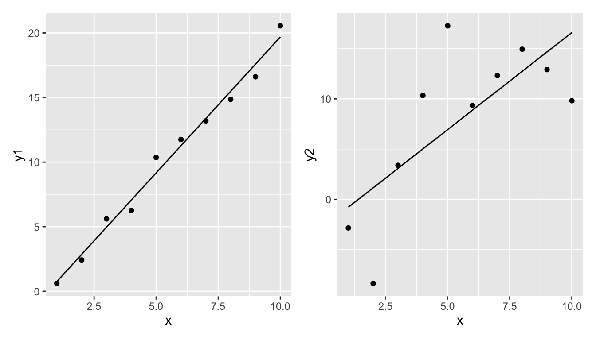
Regression Part 2 (L4)
This chapter builds on the previous chapter on simple linear regression. There we learned how to fit a regression model to data, and how to check if the assumptions of the regression model are met. In this chapter we will learn how to interpret the results of a regression model, and how to use the model to make inferences about the relationship between the dependent and independent variables.
Introduction
Now that we have a satisfactory model, we can start to use it. In the following material, you will learn:
- How to measure how good is the regression (correlation and \(R^2\)).
- How to test if the parameter estimates are compatible with some specific value (\(t\)-test).
- How to find the range of parameters values are compatible with the data (confidence intervals).
- How to find the regression lines compatible with the data (confidence band).
- How to calculate plausible values of newly collected data (prediction band).
How good is the regression model?
What would a good regression model look like? What would a bad one look like? One could say that a good regression model is one that explains the dependent variable well. But what could we mean by “explains the data well”?
Take these two examples.
Think-Pair-Share (#tps-better-model) In which of these two would you say the model is better, and in which is it worse?
The first model seems to fit the data well, while the second one does not. But how can we quantify this?
Let’s say that we will measure the goodness of the model by the amount of variability of the dependent variable that is explained by the independent variable. To do this we need to do the following:
- Measure the total variability of the dependent variable (total sum of squares, \(SST\)).
- Measure the amount of variability of the dependent variable that is explained by the independent variable (model sum of squares, \(SSM\)).
- Measure the variability of the dependent variable that is not explained by the independent variable (error sum of squares, \(SSE\)).
- Calculate the proportion of variability of the dependent variable that is explained by the independent variable (\(R^2\), pronounced as “r-squared”) (also known as the coefficient of determination) (\(R^2\) = \(SSM/SST\)).
Importantly, note that we will calculate \(SSM\) and \(SSE\) so that they sum up to \(SST\). I.e., \(SST = SSM + SSE\). That is, the total variability is the sum of what is explained by the model and what remains unexplained.
Let’s take each in turn:
\(SST\)
1. The total variability of the dependent variable is the sum of the squared differences between the dependent variable and its mean. This is called the total sum of squares (\(SST\)).
\[SST = \sum_{i=1}^{n} (y_i - \bar{y})^2\]
where: \(y_i\) is the dependent variable, \(\bar{y}\) is the mean of the dependent variable, \(n\) is the number of observations.
Note that sometimes \(SST\) is referred to as \(SSY\) (sum of squares of \(y\)).
Graphically, this is the sum of the square of the blue residuals as shown in the following graph, where the horizontal dashed line is at the value of the mean of the dependent variable.
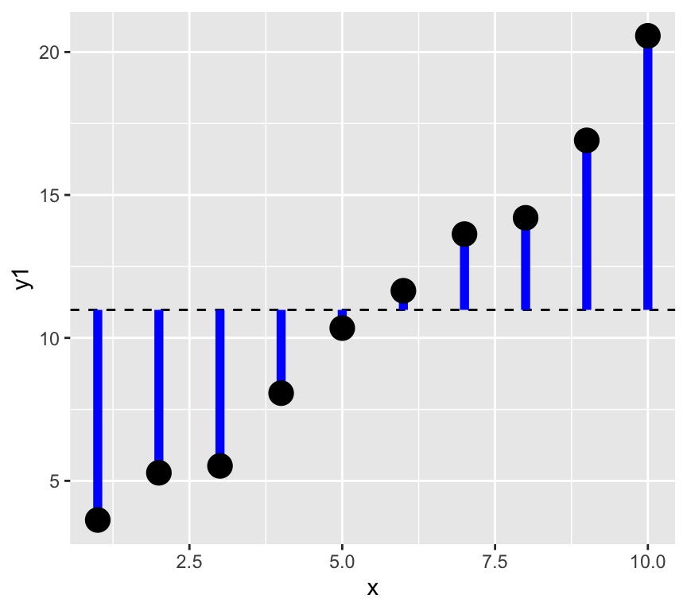
We can calculate this in R as follows:
SST <- sum((y1 - mean(y1))^2)SSM and SSE
Now the next two steps, that is getting the model sum of squares (SSM) and the error sum of squares (SSE) are a bit more complicated. To do this we need to fit a regression model to the data. Let’s see this graphically, and divide the data into the explained and unexplained parts.
Make a graph with vertical lines connecting the data to the mean of the data, but with each line two parts, one from the mean to the data, and one from the data to the predicted value.
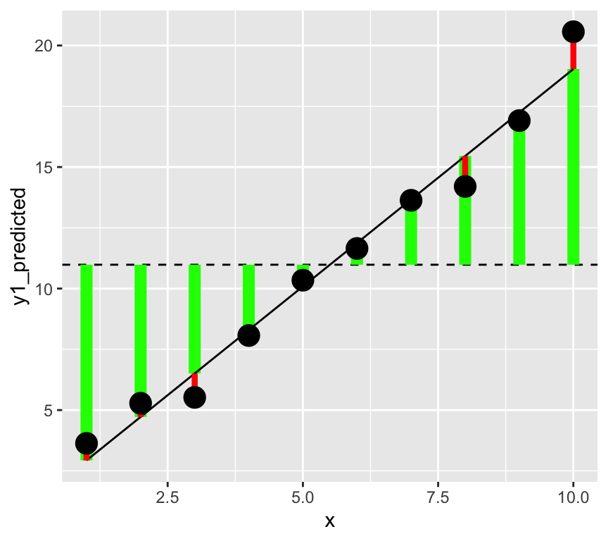
In this graph, the square of the length of the green lines is the model sum of squares (\(SST\)). The square of the length of the red lines is the error sum of squares (\(SSE\)).
In a better model the length of the green lines will be longer (the square of these gives the \(SMM\), the variability explained by the model). And the length of the red lines will be shorter (the square of these gives the \(SSE\), the variability not explained by the model).
\(SSM\)
Next we will do the second step, that is calculate the model sum of squares (\(SSM\)).
2. The amount of variability of the dependent variable that is explained by the independent variable is called the model sum of squares (\(SSM\)).
This is the difference between the predicted value of the dependent variable and the mean of the dependent variable, squared and summed:
\[SSE = \sum_{i=1}^{n} (\hat{y}_i - \bar{y})^2\]
where: \(\hat{y}_i\) is the predicted value of the dependent variable,
In R, we calculate this as follows:
m1 <- lm(y1 ~ x)
y1_predicted <- predict(m1)
SSM <- sum((y1_predicted - mean(y1))^2)
SSM[1] 362.6976\(SSE\)
Third, we calculate the error sum of squares (\(SSE\)) with either of two methods. We could calculate it as the sum of the squared residuals, or as the difference between the total sum of squares and the model sum of squares:
\[SSE = \sum_{i=1}^{n} (y_i - \hat{y}_i)^2 = SST - SSM\] Let’s calculate this in R uses both approaches:
SSE <- sum((y1 - y1_predicted)^2)
SSE[1] 9.693436Or…
SSE <- SST - SSM
SSE[1] 9.693436\(R^2\)
Finally, we calculate the proportion of variability of the dependent variable that is explained by the independent variable (\(R^2\)):
\[R^2 = \frac{SSM}{SST}\]
R.squared <- SSM/SST
R.squared[1] 0.9739697Is my R squared good?
What value of \(R^2\) is considered good? In ecological research, \(R^2\) values are often low (less than 0.3), because ecological systems are complex and many factors influence the dependent variable. However, in other fields, such as physiology, \(R^2\) values are often higher. Therefore, the answer of what values of \(R^2\) are good depends on the field of research.
Here are the four examples and their r-squared.

Think-Pair-Share (#tps-what-minimised) What is minimised when we fit a regression model? And therefore what is maximised?
How unlikey is the observed data given the null hypothesis?
We often hear this expressed as “is the relationship significant?” And maybe we heard that the relationship is significant if the p-value is less than 0.05. But what does all this actually mean? In this section we’ll figure all this out. The first step to is to formulate a null hypothesis.
What is a meaningful null hypothesis for a regression model?
As mentioned, often we’re interested in whether there is a relationship between the dependent (response) and independent (explanatory) variable. Therefore, the null hypothesis is that there is no relationship between the dependent and independent variable. This means that the null hypothesis is that the slope of the regression line is zero.
Recall the regression model: \[y = \beta_0 + \beta_1 x + \epsilon\]
Think-Pair-Share (#tps-null-hypothesis) Write down the null hypothesis of no relationship between \(x\) and \(y\) in terms of a \(\beta\) parameter.
The null hypothesis is that the slope of the regression line is zero: \[H_0: \beta_1 = 0\]
What is the alternative hypothesis?
\[H_1: \beta_1 \neq 0\]
So, how do we test the null hypothesis? More precisely, we are going to calculate the probability of observing the data we have, given that the null hypothesis is true. If this probability is very low, then we can reject the null hypothesis.
Does that make sense? Does it seem a bit convoluted? It is a bit!!!
But this is how hypothesis testing works. We never prove the null hypothesis is true. Instead, we calculate the probability of observing our data given that the null hypothesis is true. If this probability is very low, we reject the null hypothesis.
To make the calculation we can use the fact that the slope of the regression line is an estimate of the true slope. This estimate has uncertainty associated with it. We can use this uncertainty to calculate the probability of observing the data we have, given the null hypothesis is true.
We can see that the slope estimate (the \(x\) row) has uncertainty by looking at the regression output:
summary(m1)$coefficients[1:2, 1:2] Estimate Std. Error
(Intercept) -0.7638353 0.6652233
x 2.1161160 0.1072104The estimate is the mean of the distribution of the parameter (slope) and the standard error is a measure of the uncertainty of the estimate.
The standard error is calculated as:
\[\sigma^{(\beta_1)} = \sqrt{ \frac{\hat\sigma^2}{\sum_{i=1}^n (x_i - \bar x)^2}}\]
Where \(\hat\sigma^2\) is the expected residual variance of the model. This is calculated as:
\[\hat\sigma^2 = \frac{\sum_{i=1}^n (y_i - \hat y_i)^2}{n-2}\]
Where \(\hat y_i\) is the predicted value of \(y_i\) from the regression model.
OK, let’s take a look at this intuitively. We have the estimate of the slope and the standard error of the estimate.
Here is a graph of the value of the slope estimate versus the standard error of the estimate:
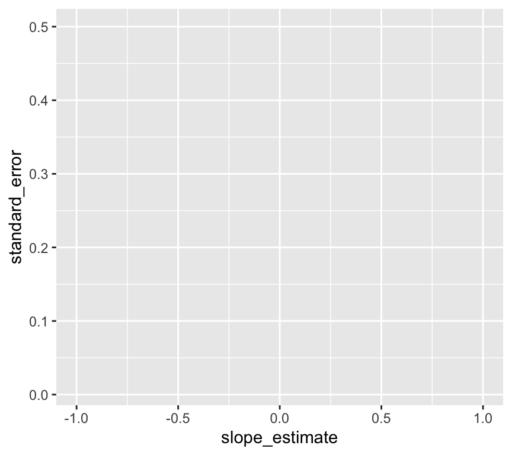
Think-Pair-Share (#tps-chance-area) In what areas of the graph is the slope estimate more likely to have been observed by chance? And what regions is it less likely to have been observed by chance? Think about this before you look at the end of this chapter for an answer.
When the slope estimate is larger, it is less likely to have been observed by chance. And when the standard error is larger, it is more likely to have been observed by chance. How can we put these together into a single measure?
If we divide the slope estimate by the standard error, we get a measure of how many standard errors the slope estimate is from the null hypothesis slope of zero. This is the \(t\)-statistic:
\[t = \frac{\hat\beta_1 - \beta_{1,H_0}}{\sigma^{(\beta_1)}}\]
Where \(\beta_{1,H_0}\) is the null hypothesis value of the slope, usually zero, so that
\[t = \frac{\hat\beta_1}{\sigma^{(\beta_1)}}\]
The \(t\)-statistic is a measure of how many standard errors the slope estimate is from the null hypothesis value of the slope. The larger the \(t\)-statistic, the less likely the slope estimate was observed by chance.
How can we transform the value of a \(t\)-statistic into a p-value? We can use the \(t\)-distribution, which quantifies the probability of observing a value of the \(t\)-statistic under the null hypothesis.
But what is the \(t\)-distribution? It is a distribution of the \(t\)-statistic under the null hypothesis. It is a bell-shaped distribution that is centered on zero. The shape of the distribution is determined by the degrees of freedom, which is \(n-2\) for a simple linear regression model.
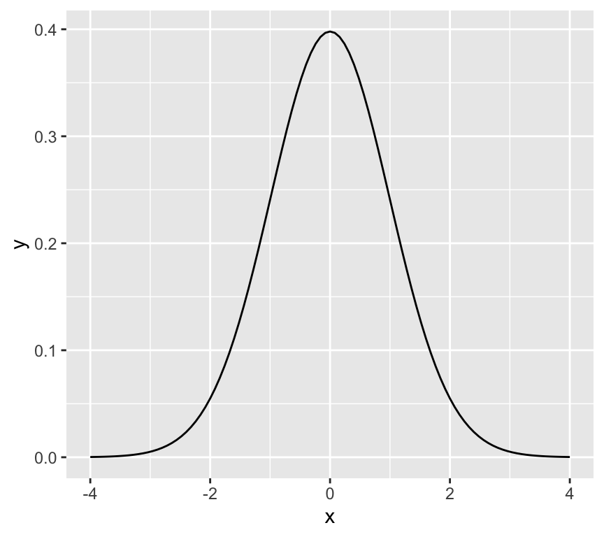
Tip
By the way, it is named the \(t\)-distribution by it’s developer, William Sealy Gosset, who worked for the Guinness brewery in Dublin, Ireland. In his 1908 paper, Gosset introduced the \(t\)-distribution but he didn’t explicitly explain his choice of the letter \(t\). The choice of the letter \(t\) could be to indicate “Test”, as the \(t\)-distribution was developed specifically for hypothesis testing.
Now, recall that the p-value is the probability of observing the value of the test statistic (so here the \(t\)-statistic) at least as extreme as the one we have, given the null hypothesis is true. We can calculate this probability by integrating the \(t\)-distribution from the observed \(t\)-statistic to the tails of the distribution.
Here is a graph of the \(t\)-distribution with 100 degrees of freedom with the tails of the distribution shaded so that the area of the shaded region is 0.05 (i.e., 5% of the total area).
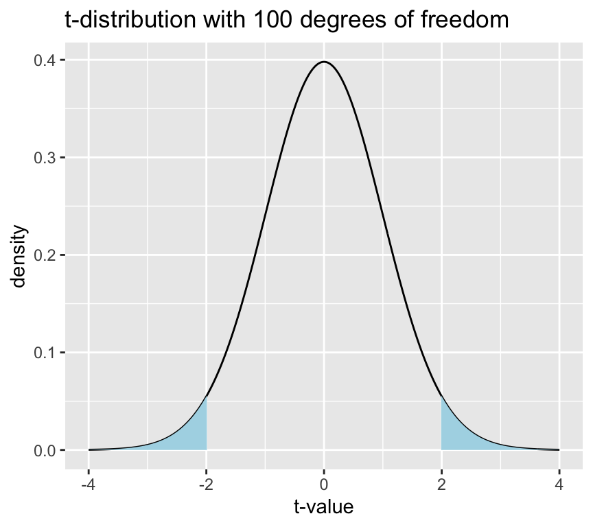
And here’s a graph of the \(t\)-distribution with 1000 degrees of freedom (blue line) and the normal distribution (green dashed line):
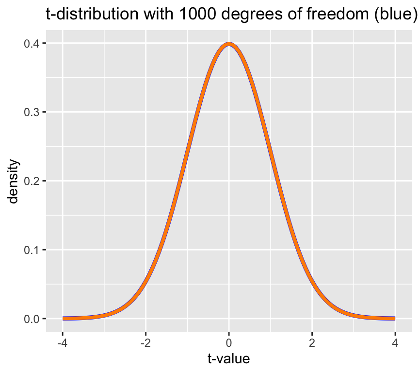
So, with a large number of observations, the \(t\)-distribution approaches the normal distribution. For the normal distribution, the 95% area is between -1.96 and 1.96.
## x value for 95% area of normal distribution
x_value <- qnorm(0.975)
x_value[1] 1.959964qnorm is a function that calculates the \(x\) value for a given quantile (probability) of the normal distribution. In simpler terms, it finds the value \(x\) at which the area under the normal curve (up to \(x\)) equals the given probability \(p\) (0.975 in the example immediately above here).
Let’s go back to the age - blood pressure data and calculate the p-value for the slope estimate.
Read in the data:
bp_data <- read_csv(here::here("datasets/Simulated_Blood_Pressure_and_Age_Data.csv"))Rows: 100 Columns: 2
── Column specification ────────────────────────────────────────────────────────
Delimiter: ","
dbl (2): Age, Systolic_BP
ℹ Use `spec()` to retrieve the full column specification for this data.
ℹ Specify the column types or set `show_col_types = FALSE` to quiet this message.Make a graph:
ggplot(bp_data, aes(x = Age, y = Systolic_BP)) +
geom_point() +
geom_smooth(method = "lm", se = FALSE, formula = y ~ x)
Here’s the model:
mod1 <- lm(Systolic_BP ~ Age, data = bp_data)Here we calculate the \(t\)-statistic for the slope estimate:
t_stat <- mod1$coefficients[2] / summary(mod1)$coefficients[2, 2]And here we calculate the one-tailed and two-tailed \(p\)-values:
one_tailed_p_value <- pt(-abs(t_stat), df = nrow(bp_data) - 2)
two_tailed_p_value <- 2 * one_tailed_p_value
one_tailed_p_value Age
3.746958e-51 two_tailed_p_value Age
7.493917e-51 We can get the \(p\)-value directly from the summary function:
summary(mod1)$coefficients[2, ] Estimate Std. Error t value Pr(>|t|)
8.240678e-01 2.770955e-02 2.973948e+01 7.493917e-51 Conclusion: there is very strong evidence that the blood pressure is associated with age, because the \(p\)-value is extremely small (thus it is very unlikely that the observed slope value or a large one would be seen if there was really no association). Thus, we can reject the null hypothesis that the slope is zero.
This basically answers question 1: “Are the parameters compatible with some specific value?”
Recap: Formal definition of the \(p\)-value
The formal definition of \(p\)-value is the probability to observe a data summary (e.g., an average or a slope) that is at least as extreme as the one observed, given that the null hypothesis is correct.
Example (normal distribution): Assume that we calculated that \(t\)-value = -1.96
\(\Rightarrow\) \(Pr(|t|\geq 1.96)=0.05\) (two-tailed) and \(Pr(t\leq-1.96)=0.025\) (one-tailed).
And here is a graph showing this:
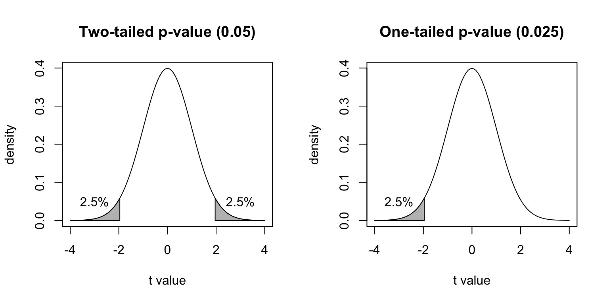
A cautionary note on the use of \(p\)-values
Maybe you have seen that in statistical testing, often the criterion \(p\leq 0.05\) is used to test whether \(H_0\) should be rejected. This is often done in a black-or-white manner. However, we will put a lot of attention to a more reasonable and cautionary interpretation of \(p\)-values in this course!
How strong is the relationship?
The actual value of the slope has practical meaning. The slope of the regression line tells us how much the dependent variable changes when the independent variable changes by one unit. The slope is one measure of the strength of the relationship between the two variables.
We can ask what values of a parameter estimate are compatible with the data (confidence intervals)? To answer this question, we can determine the confidence intervals of the regression parameters.
The confidence interval of a parameter estimate is defined as the interval that contains the true parameter value with a certain probability. So the 95% confidence interval of the slope is the interval that contains the true slope with a probability of 95%.
We can then imagine two cases. The 95% confidence interval of the slope includes 0:
Warning: `geom_errobarh()` was deprecated in ggplot2 4.0.0.
ℹ Please use the `orientation` argument of `geom_errorbar()` instead.`height` was translated to `width`.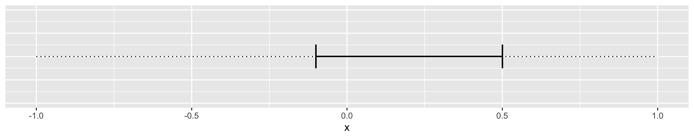
Or where the confidence interval does not include zero:
`height` was translated to `width`.
How do we calculate the lower and upper limits of the 95% confidence interval of the slope?
Recall that the \(t\)-value for a null hypothesis of slope of zero is defined as:
\[t = \frac{\hat\beta_1}{\hat\sigma^{(\beta_1)}}\]
The first step is to calculate the \(t\)-value that corresponds to a p-value of 0.05. This is the \(t\)-value that corresponds to the 97.5% quantile of the \(t\)-distribution with \(n-2\) degrees of freedom.
\(t_{0.975} = t_{0.025} = 1.96\), for large \(n\).
The 95% confidence interval of the slope is then given by:
\[\hat\beta_1 \pm t_{0.975} \cdot \hat\sigma^{(\beta_1)}\]
In our blood pressure example the estimated slope is 0.8240678 and the standard error of the slope is 0.0277096. We can calculate the 95% confidence interval of the slope in R as follows:
n <- 100
t_0975 <- qt(0.975, df = n - 2)
half_interval <- t_0975 * summary(mod1)$coef[2,2]
lower_limit <- coef(mod1)[2] - half_interval
upper_limit <- coef(mod1)[2] + half_interval
ci_slope <- c(lower_limit, upper_limit)
slope <- coef(mod1)[2]
slope Age
0.8240678 ci_slope Age Age
0.7690791 0.8790565 Or, using the confint function:
## 95% confidence interval of the slope of mod1
ci_slope_2 <- confint(mod1, level=c(0.95))[2,]
ci_slope_2 2.5 % 97.5 %
0.7690791 0.8790565 Or we can do it using values from the coefficients table:
coefs <- summary(mod1)$coef
beta <- coefs[2,1]
sdbeta <- coefs[2,2]
beta + c(-1,1) * qt(0.975,241) * sdbeta [1] 0.7694840 0.8786516Interpretation: for an increase in the age by one year, roughly 0.82 mmHg increase in blood pressure is expected, and all true values for \(\beta_1\) between 0.77 and 0.88 are compatible with the observed data.
Confidence and Prediction Bands
Remember: If another sample from the same population was taken, the regression line would look slightly different.
There are two questions to be asked:
Which other regression lines are compatible with the observed data? This leads to the confidence band.
Where do future observations (\(y\)) with a given \(x\) coordinate lie? This leads to the prediction band.
Note: The prediction band is much broader than the confidence band.
Calculation of the confidence band
Given a fixed value of \(x\), say \(x_0\). The question is:
Where does \(\hat y_0 = \hat\beta_0 + \hat\beta_1 x_0\) lie with a certain confidence (i.e., 95%)?
This question is not trivial, because both \(\hat\beta_0\) and \(\hat\beta_1\) are estimates from the data and contain uncertainty.
The details of the calculation are given in Stahel 2.4b.
Plotting the confidence interval around all \(\hat y_0\) values one obtains the confidence band or confidence band for the expected values of \(y\).
Note: For the confidence band, only the uncertainty in the estimates \(\hat\beta_0\) and \(\hat\beta_1\) matters.
Here is the confidence band for the blood pressure data:

Very narrow confidence bands indicate that the estimates are very precise. In this case the estimated intercept and slope are precise because the sample size is large and the data points are close to the regression line.
Calculations of the prediction band
We can easily predicted an expected value of \(y\) for a given \(x\) value. But we can also ask w where does a future observation lie with a certain confidence (i.e., 95%)?
To answer this question, we have to consider not only the uncertainty in the predicted value caused by uncertainty in the parameter estimates \(\hat y_0 = \hat\beta_0 + \hat\beta_1 x_0\), but also the error term \(\epsilon_i \sim N(0,\sigma^2)\)}.
This is the reason why the prediction band is wider than the confidence band.
Here’s a graph showing the prediction band for the blood pressure data:
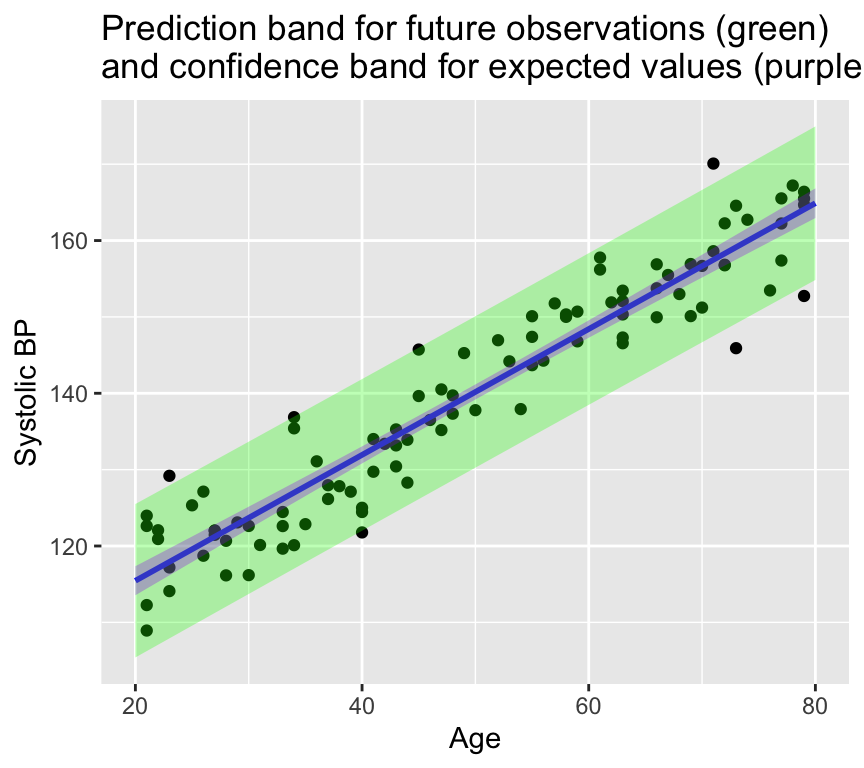
Another way to think of the 95% confidence band is that it is where we would expect 95% of the regression lines to lie if we were to collect many samples from the same population. The 95% prediction band is where we would expect 95% of the future observations to lie.
Think–Pair–Share (#a_prediction_vs_estimation) Which interval answers: “What is the mean response?” Which answers: “What might a new observation look like?”
Review
That is regression done (at least for our current purposes). Here is a summary of what we have covered:
Previous chapter:
- Why use (linear) regression?
- Fitting the line (= parameter estimation)
- Is linear regression good enough model to use?
- What to do when things go wrong?
- Transformation of variables/the response.
- Handling of outliers.
This chapter:
- Sums of squares: \(SST\), \(SSM\), \(SSE\)
- \(R^2\) as a measure of goodness of fit
- Hypothesis testing in regression
- Null and alternative hypotheses
- t-statistic and p-values
- Tests and confidence intervals
- Confidence and prediction bands
Further reading
Again, there are many good books and online resources about regression models. The same ones as last week are recommended, also for interpreting results of regression models.
- Faraway, J. J. (2016). Linear models with R (2nd ed.). Chapman and Hall/CRC. Link.
- Chapter 7 of The New Statistics with R, by Andy Hector.
Extras
Randomisation test for the slope of a regression line
Let’s use randomisation as another method to understand how likely we are to observe the data we have, given the null hypothesis is true.
If the null hypothesis is true, we expect no relationship between \(x\) and \(y\). Therefore, we can shuffle the \(y\) values and fit a regression model to the shuffled data. We can repeat this many times and calculate the slope of the regression line each time. This will give us a distribution of slopes we would expect to observe if the null hypothesis is true.
First, we’ll make some data and get the slope of the regression line. Here is the observed slope and relationship:
set.seed(123)
n <- 100
x <- 1:n
y <- 0.1*x + rnorm(n, 0, 10)
m <- lm(y ~ x)
coef(m)[2] x
0.1251108 ggplot(data.frame(x = x, y = y), aes(x = x, y = y)) +
geom_point() +
geom_smooth(method = "lm", se = FALSE, formula = y ~ x) 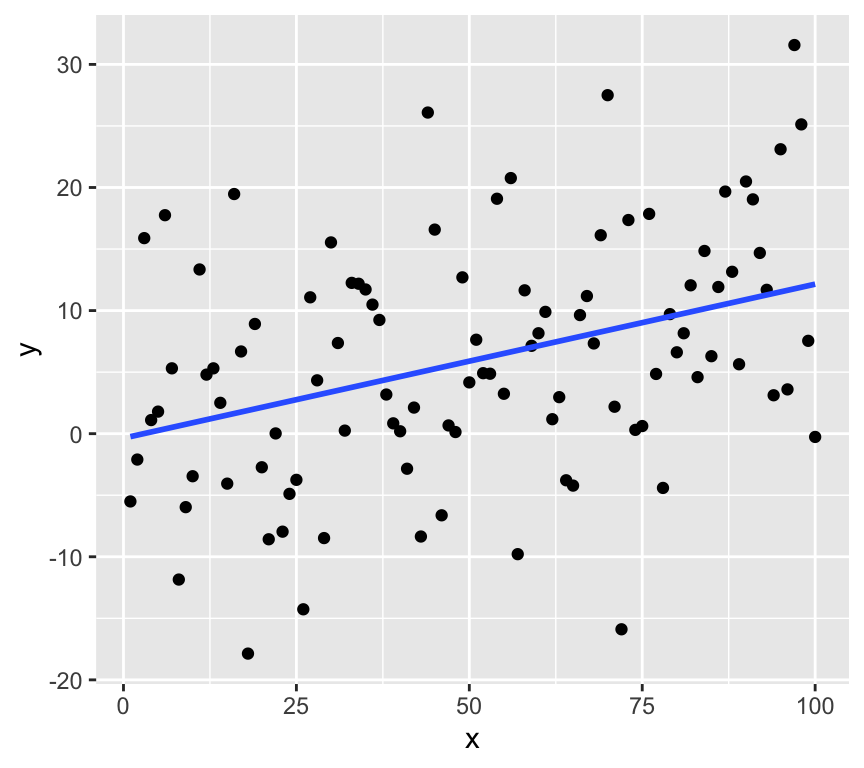
Now we’ll use randomisation to test the null hypothesis. We can create lots of examples where the relationship is expected to have a slope of zero by shuffling randomly the \(y\) values. Here are 20:
par(mfrow = c(5, 4))
for (i in 1:20) {
y_rand <- sample(y)
m_rand <- lm(y_rand ~ x)
plot(x, y_rand, main = paste("Slope = ", round(coef(m_rand)[2], 2)))
abline(m_rand)
}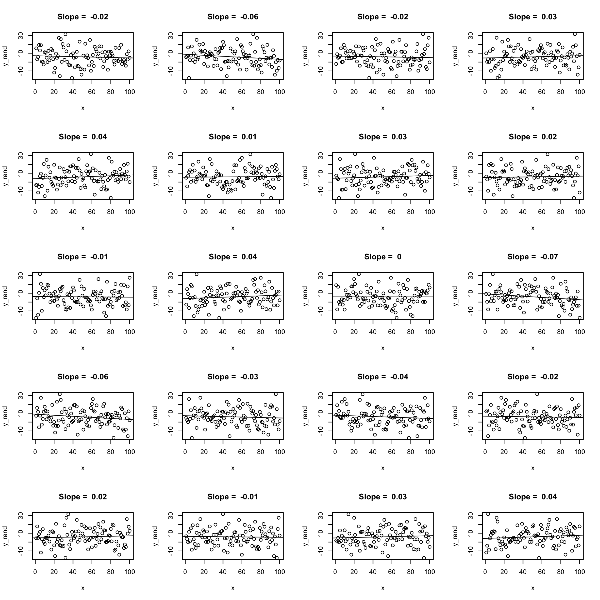
Now let’s create 19 and put the real one in there somewhere random. Here’s a case where the real data has a quite strong relationship:
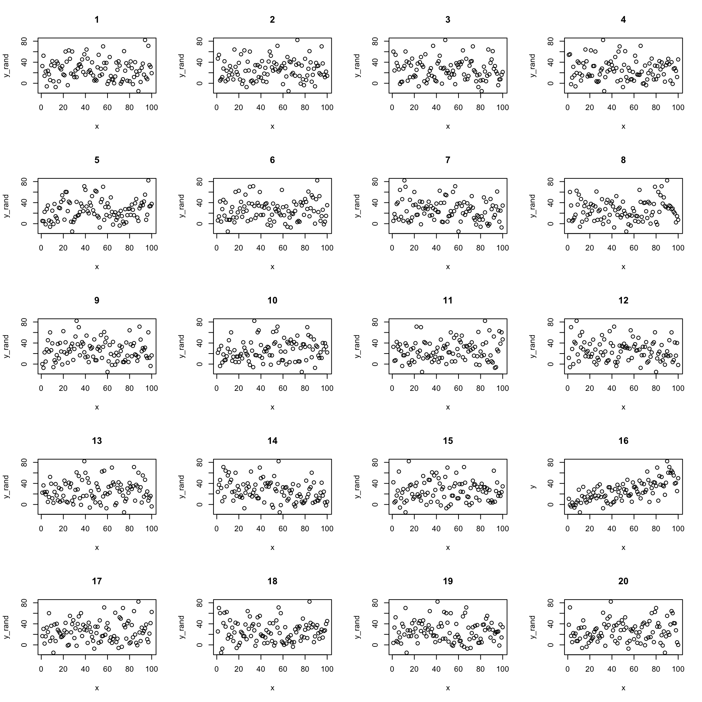
We can confidently find the real data amount the shuffled data. But what if the relationship is weaker?

Now its less clear which is the real data. We can use this idea to test the null hypothesis.
We do the same procedure of but instead of just looking at the graphs, we calculate the slope of the regression line each time. This gives us a distribution of slopes we would expect to observe if the null hypothesis is true. We can then see where the observed slope lies in this distribution of null hypothesis slopes.
# repeat 10000 time a randomisation test
y <- 0.15*x + rnorm(n, 0, 15)
rand_slopes <- replicate(10000, {
y_rand <- sample(y)
m_rand <- lm(y_rand ~ x)
coef(m_rand)[2]
})
ggplot(data.frame(slopes = rand_slopes), aes(x = slopes)) +
geom_histogram(bins = 50) +
geom_vline(xintercept = coef(m)[2], color = "red")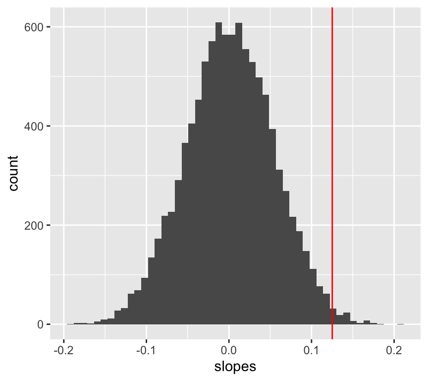
We can now calculate the probability of observing the data we have, given the null hypothesis is true.
p_value <- mean(abs(rand_slopes) >= abs(coef(m)[2]))
p_value[1] 0.0172Visualising p-values for regression slopes
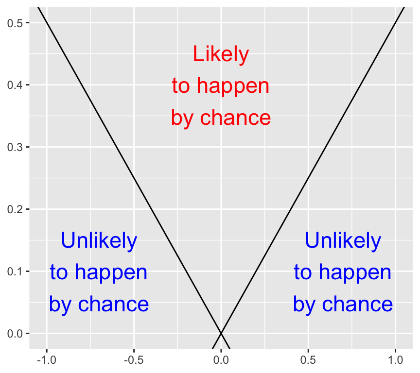